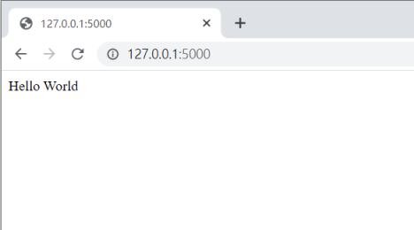
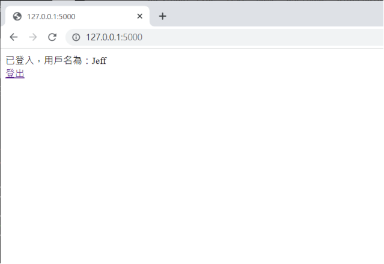

Flask
40918102 林甲富
Flask 是一個使用 Python 編寫的輕量級網頁應用程式框架。它被設計為簡單、易學和靈活，同時提供足夠的功能來構建各種類型的網頁應用程式。
不需要任何額外的工具或資料庫，因此被廣泛用於開發簡單的 API、網站和網頁應用程式。
安裝Flask 先安裝python
使用命令安装 Flask：pip install Flask
到編輯器寫入code
第一行from flask import Flask是在項目中導入flask
第二行app = Flask(__name__)
Flask 類別 初始化時 傳入的 __name__ 參數，代表當前模組的名稱。是固定用法，以便讓 Flask 知道在哪裡尋找資源。(例如: 模板和靜態文件)
第三行 @app.route("/")
裝飾器是告訴 Flask，哪個 URL 應該觸發我們的函式。斜線代表的就是網站的根目錄，可以疊加。
到CMD執行python hello.py
在瀏覽器打開URL 127.0.0.1:5000，網頁將會顯示Hello World

裝飾器也可將URL綁定到函式中，打開URL 127.0.0.1:5000/hello，網頁將會顯示Hello World
也可添加參數來建構動態URL，在127.0.0.1:5000/guest/<輸入參數>，瀏覽器將會顯示Hello <輸入參數> as Guest
新增一個HTML表單讓使用者再首頁來<輸入參數>，並使用POST方式將表單參數發送到URL，網頁顯示welcome<輸入參數>
模板引擎允許將靜態 HTML 檔案與動態資料進行結合，生成最終的輸出。根目錄下建立一個名為 templates 的資料夾。建立用於渲染的 HTML 模板檔案。函式中使用 render_template 函式來渲染模板。render_template 函式接受模板檔案名稱作為參數，並可傳遞變數供模板使用。
靜態文件是指不需要經過動態處理的檔案，例如 CSS 樣式表、JavaScript 腳本和圖片等。
根目錄下建立一個名為 static 的資料夾。 HTML 模板中使用 url_for 函式來引用靜態文件。url_for 函式會生成靜態文件的 URL，讓瀏覽器可以請求並載入這些文件。將靜態文件放置在 static 資料夾中，然後在 HTML 模板中使用 url_for 函式來引用這些文件，即可在瀏覽器中載入它們。
在模板中使用表單元素和相應的名稱屬性來接收輸入的資料。當使用者提交表單後，表單資料將被發送到 /result URL。在 result 函式中，再次將表單資料作為參數傳遞給 result.html 模板，以顯示結果。
使用 cookies 來存儲和跟蹤用戶的資訊。主要目的是在用戶端和服務器之間傳遞資訊，以便記住用戶的首選設定、驗證用戶身份、追蹤用戶活動等。處理 cookies 需要使用 request 和 response 對象。request 對象包含客戶端傳遞的 cookies，而 response 對象則用於設置 cookies 並將其發送回客戶端。使用 response.set_cookie() 方法來設置 cookie。使用 request.cookies 屬性來獲取客戶端發送的 cookies。刪除 cookie，可以使用 response.delete_cookie() 方法。
使用 session，可以存儲和跟蹤資訊，以用戶身份驗證、個人化體驗等功能。當用戶首次訪問網站時，Flask 會在用戶的瀏覽器中創建一個名為 "session" 的 cookie，並將其用於跟蹤用戶。這個 cookie 包含一個唯一的 session ID，該 ID 用於在伺服器端存儲用戶的會話資訊。要在 session 中存儲資訊，可以使用 session 對象的屬性將任意資料存儲在 session 中，使用鍵來獲取相應的值。要刪除 session 中的資訊，可以使用 session 對象的 pop() 或 clear() 方法。
